Jujutsu High Students
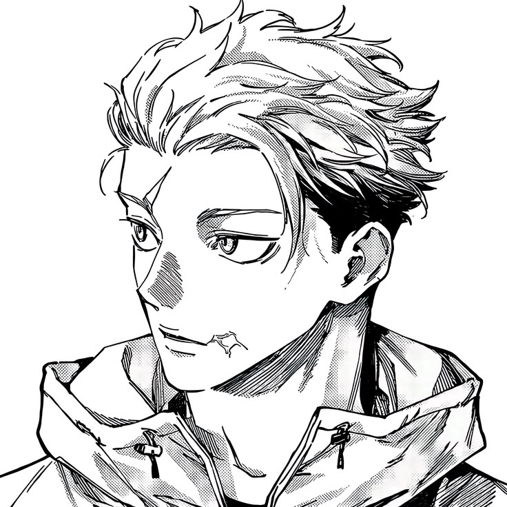
First-YearYuji Itadori
- Birthday March 20, 2003
- Cursed Technique Shrine, Blood Manipulation, Reverse Cursed Technique
Sukuna’s vessel. Superhuman strength and a strong sense of right and wrong; he vows to give people a proper death.
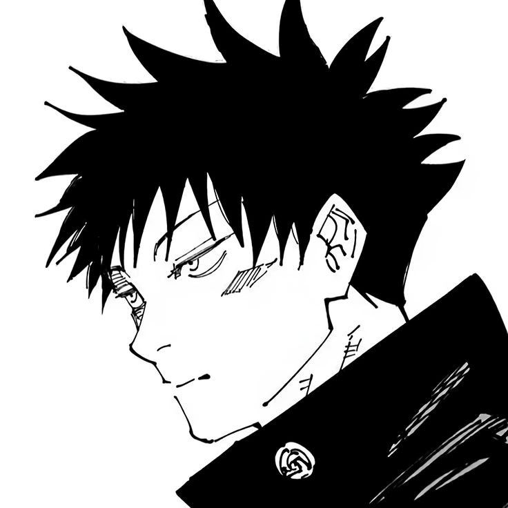
First-YearMegumi Fushiguro
- Birthday December 22, 2002
- Cursed Technique Ten Shadows
A calm, serious sorcerer with a strong sense of duty, he summons shikigami from shadows and saves people he thinks are worth saving.
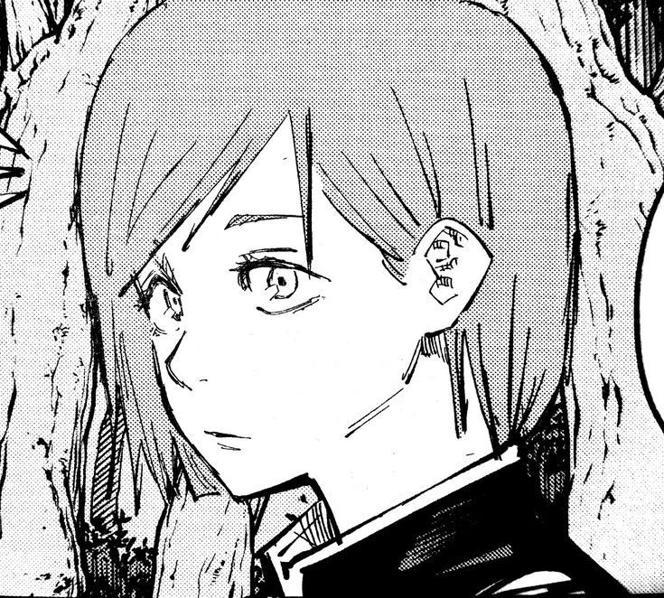
First-YearNobara Kugisaki
- Birthday August 7, 2002
- Cursed Technique Straw Doll Technique (Resonance, Hairpin)
A fearless, confident country girl with a sharp tongue who fights with hammer, nails, and a straw doll.
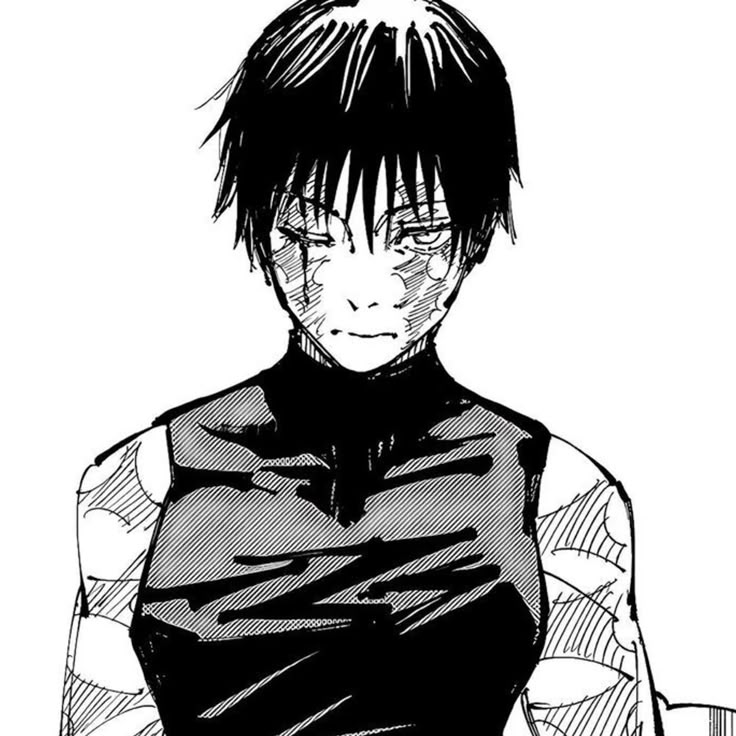
Second-YearMaki Zenin
- Birthday October 20, 2001
- Cursed Technique None (Heavenly Restriction)
A cursed-tool specialist who left the Zenin clan’s rules behind and proved herself through sheer skill.
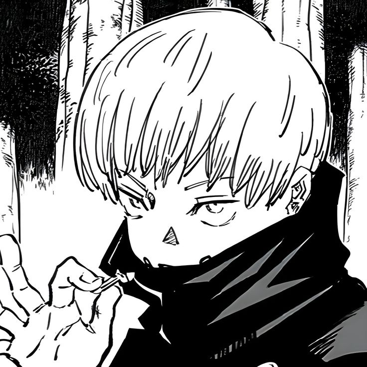
Second-YearToge Inumaki
- Cursed Technique Cursed Speech
His words become commands, so he speaks in rice-ball ingredients to protect others from his own power.
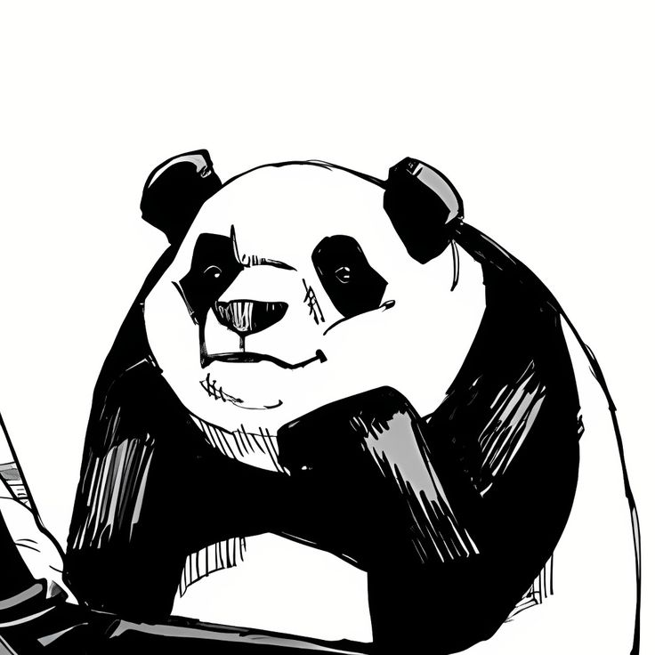
Second-YearPanda
- Cursed Technique Cursed corpse (core switching, Gorilla Mode)
An abnormal mutated cursed corpse created by Principal Yaga, kind-hearted and strong.
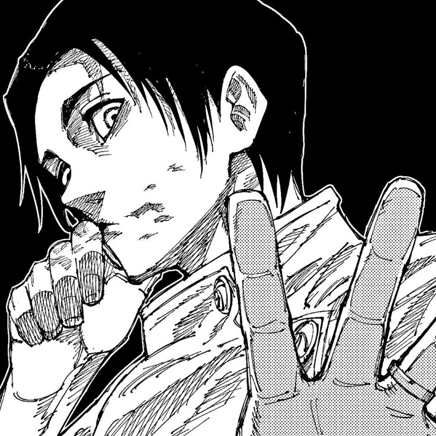
Special GradeYuta Okkotsu
- Cursed Technique Copy, Rika’s cursed energy
Protagonist of Jujutsu Kaisen 0. A second-year with enormous cursed energy and a deep bond with Rika.
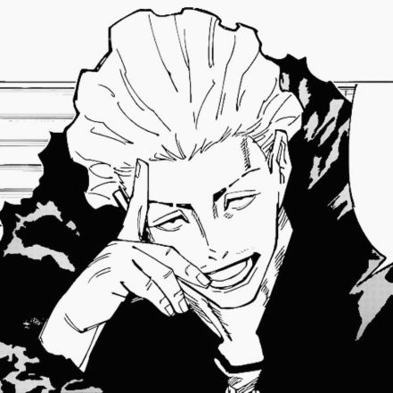
Third-YearKinji Hakari
- Cursed Technique Private Pure Love Train
A gambler-style fighter whose Domain Expansion turns a jackpot into near-endless cursed energy and regeneration.
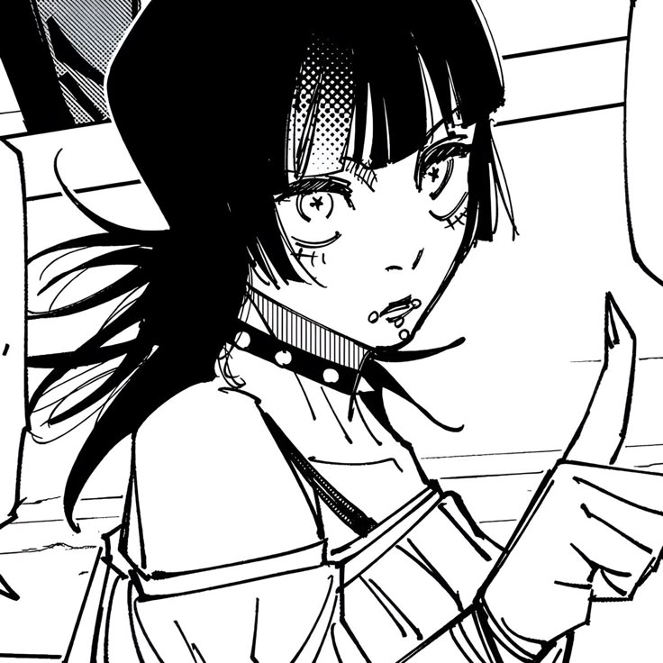
Third-YearKirara Hoshi
- Cursed Technique Not detailed
A second-year-level student from the Jujutsu High circle, introduced during the Culling Game arc.
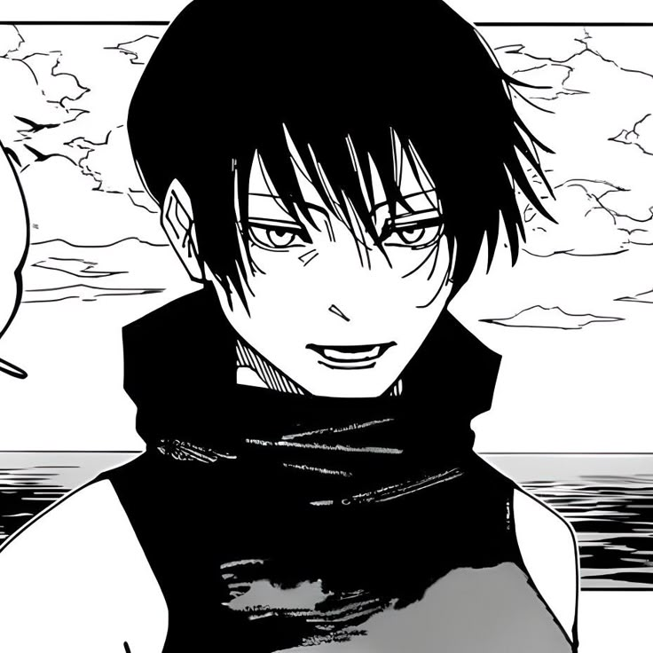
KyotoMai Zenin
- Cursed Technique Construction
Maki’s twin sister; she creates objects from her own cursed energy, mostly bullets for her revolver.
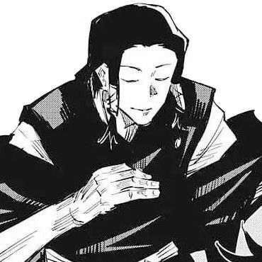
KyotoNoritoshi Kamo
- Cursed Technique Blood Manipulation (Kamo clan)
Heir of the Kamo clan, calm and precise in using blood as a weapon.
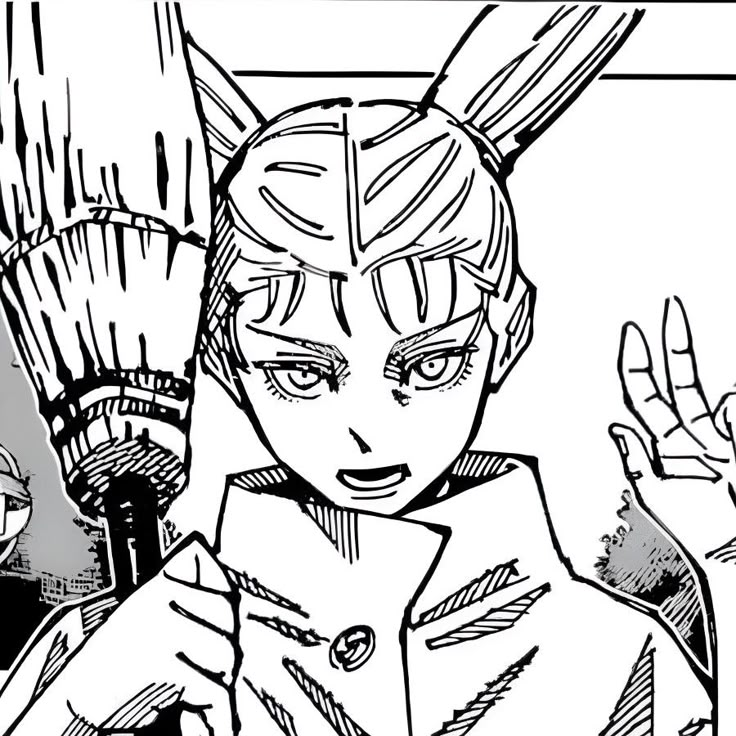
KyotoMomo Nishimiya
- Cursed Technique Wind Scythe
A broom-riding sorcerer who supports her team and fights from the air.
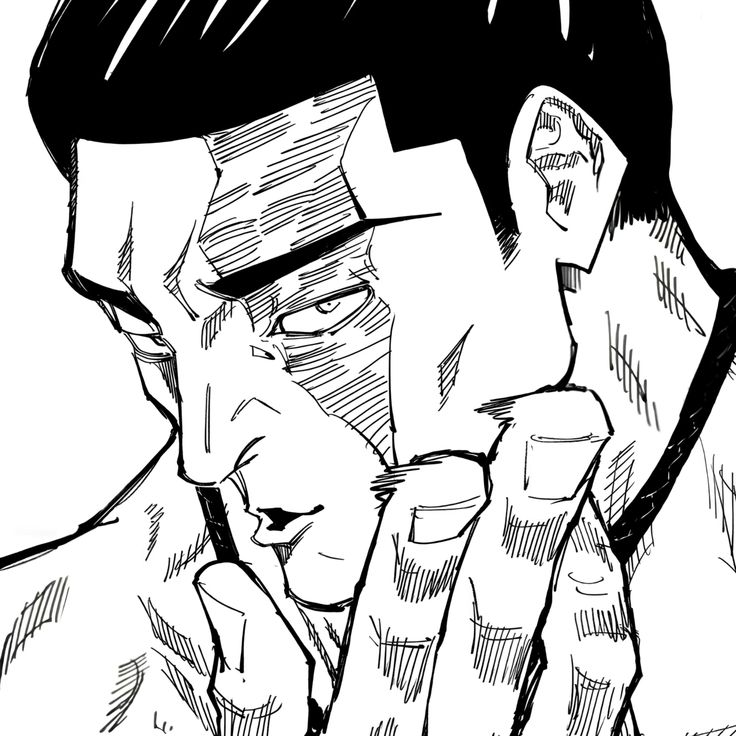
KyotoAoi Todo
- Cursed Technique Boogie Woogie
Eccentric Kyoto student and self-proclaimed brother of Yuji, a fighter with excellent instincts.
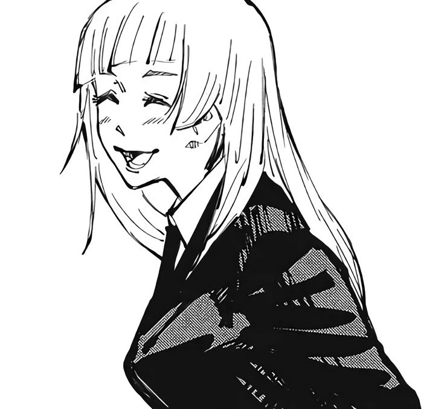
KyotoKasumi Miwa
- Cursed Technique New Shadow Style (Simple Domain)
A sword-wielding sorcerer with a big heart, closely tied to the Kyoto team.
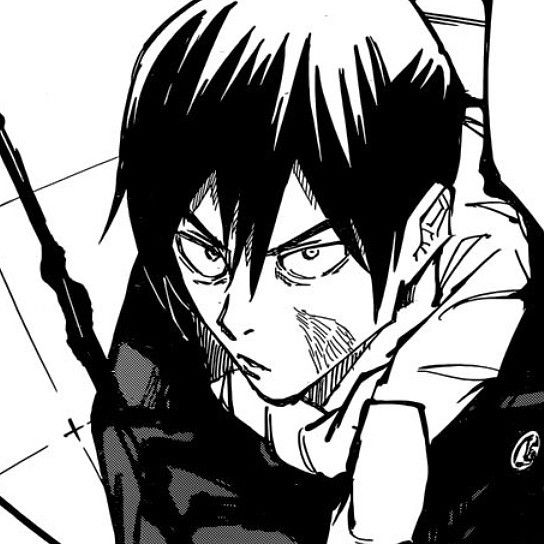
KyotoKokichi Muta / Mechamaru
- Cursed Technique Puppet Manipulation
Controls the robot Mechamaru from a distance, because his real body is too weak to fight.
Instructors and Jujutsu High Affiliates
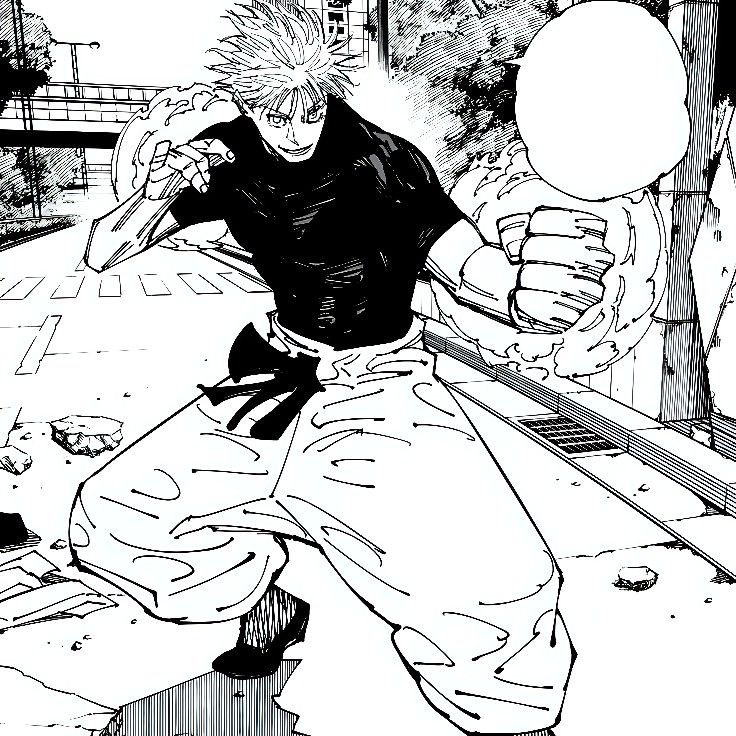
InstructorSatoru Gojo
- Birthday December 7, 1989
- Cursed Technique Limitless, Six Eyes
The strongest sorcerer alive, a playful teacher who wants to reform the jujutsu world through his students.
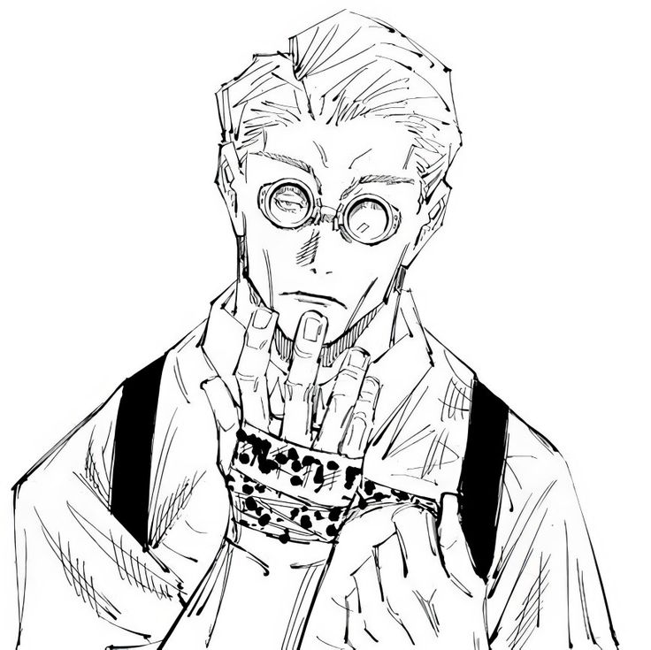
Grade 1Kento Nanami
- Birthday July 3, 1988
- Cursed Technique Ratio Technique
A former salaryman who treats sorcery as a job and mentors Yuji steadily.
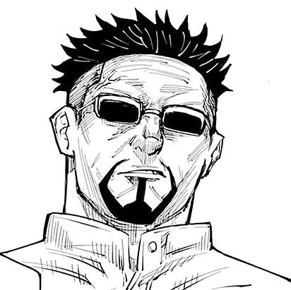
PrincipalMasamichi Yaga
- Cursed Technique Cursed Corpse Technique
Head of Tokyo Jujutsu High and creator of cursed corpses like Panda.
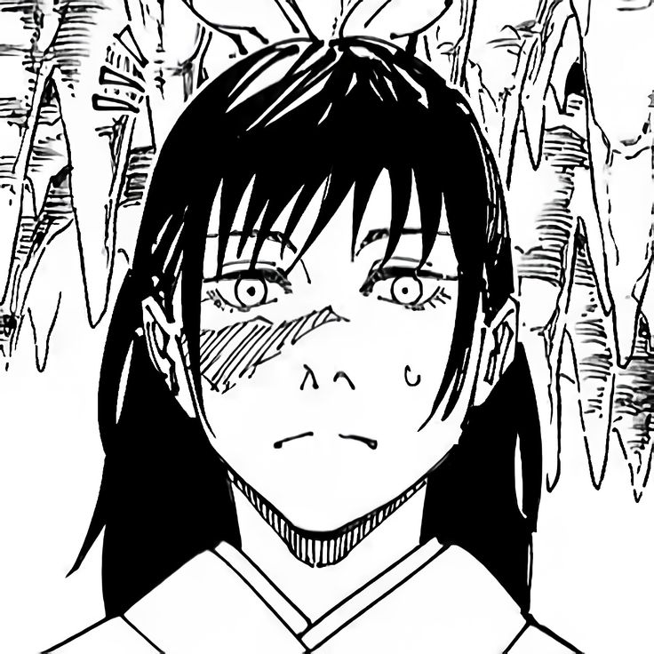
Kyoto StaffUtahime Iori
- Cursed Technique Cursed Energy Amplification (voice)
A Kyoto teacher, easily exasperated by Gojo, who supports students with her songs.
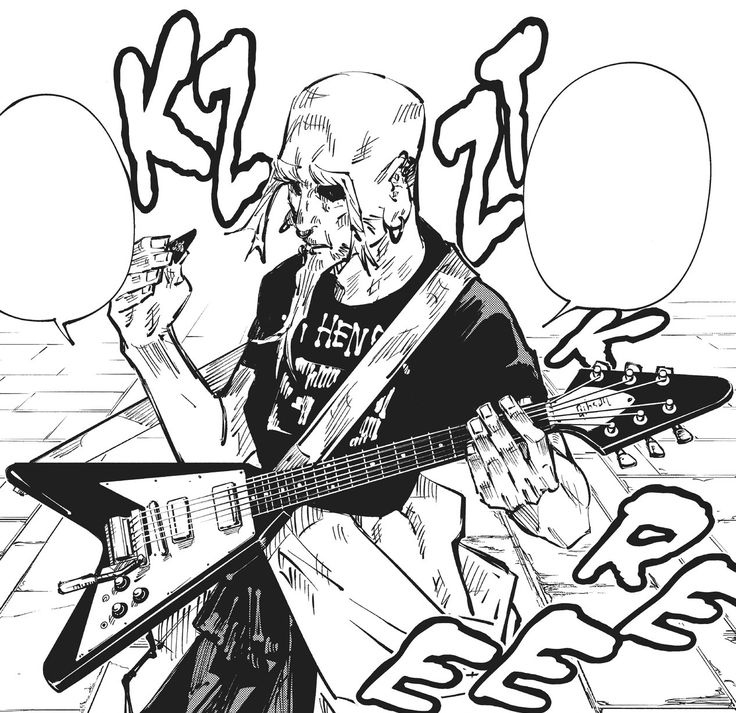
PrincipalYoshinobu Gakuganji
- Cursed Technique Not detailed
Principal of Kyoto Jujutsu High and a stern senior figure of the jujutsu world.
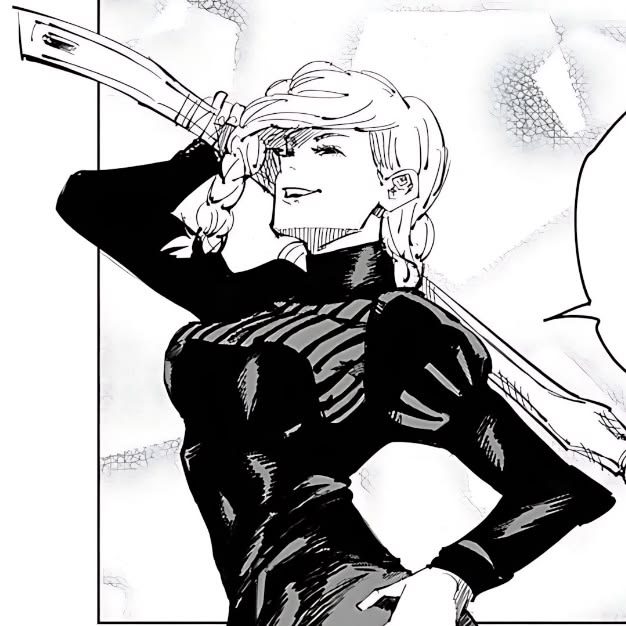
Grade 1Mei Mei
- Cursed Technique Crow Manipulation
A mercenary sorcerer who works for money and controls crows.
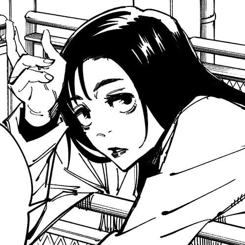
DoctorShoko Ieiri
- Cursed Technique Reverse Cursed Technique
Jujutsu High’s doctor, who heals injured sorcerers and was a classmate of Gojo and Geto.
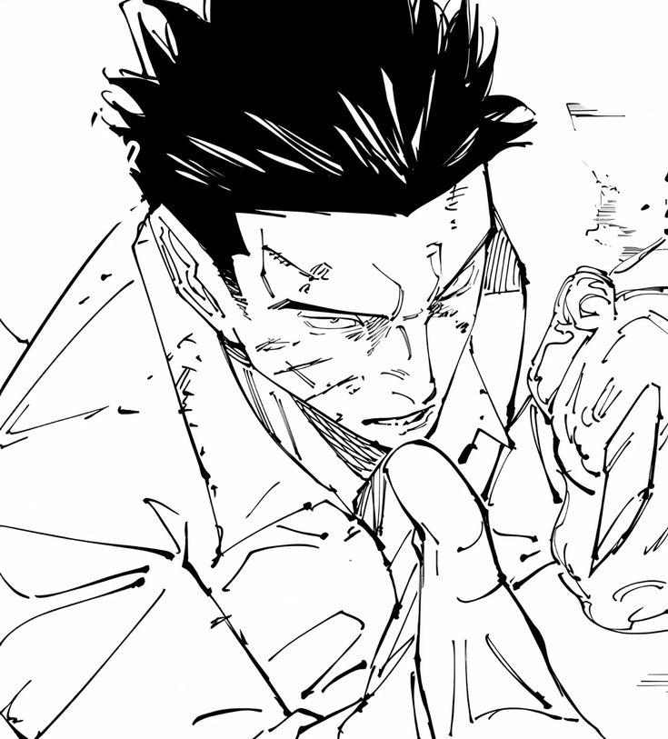
Grade 1Atsuya Kusakabe
- Cursed Technique New Shadow Style (Simple Domain)
A veteran instructor who values safety and seems laid-back but is a capable fighter.
Allies
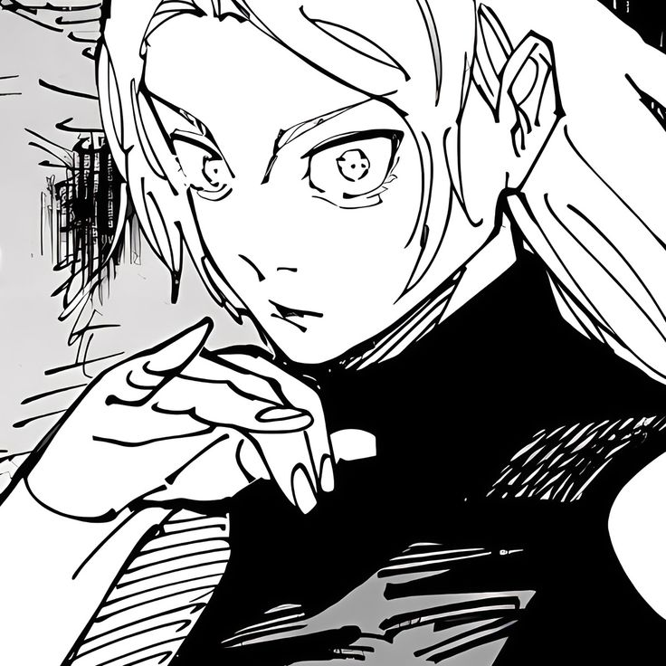
AlliesYuki Tsukumo
- Cursed Technique Star Rage
A Special Grade sorcerer who wants a world without cursed energy and fights with immense power.
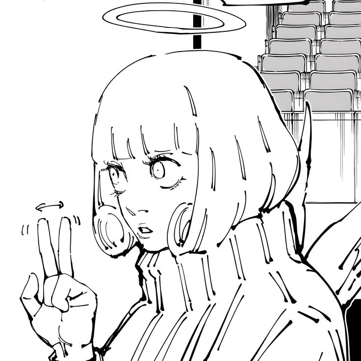
AlliesAngel / Hana Kurusu
- Cursed Technique Jacob’s Ladder
A sorcerer from the past who is connected to the Culling Game and a close ally of Yuta.
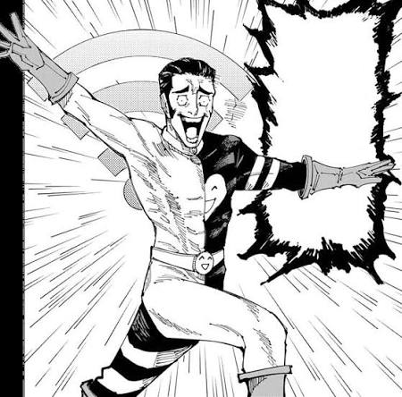
AlliesFumihiko Takaba
- Cursed Technique Comedian
A comedian who turns his jokes into reality in the Culling Game.
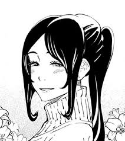
AlliesTsumiki Fushiguro
- Cursed Technique None (non-sorcerer)
Megumi’s older stepsister, a kind non-sorcerer whose safety is the reason Megumi fights.
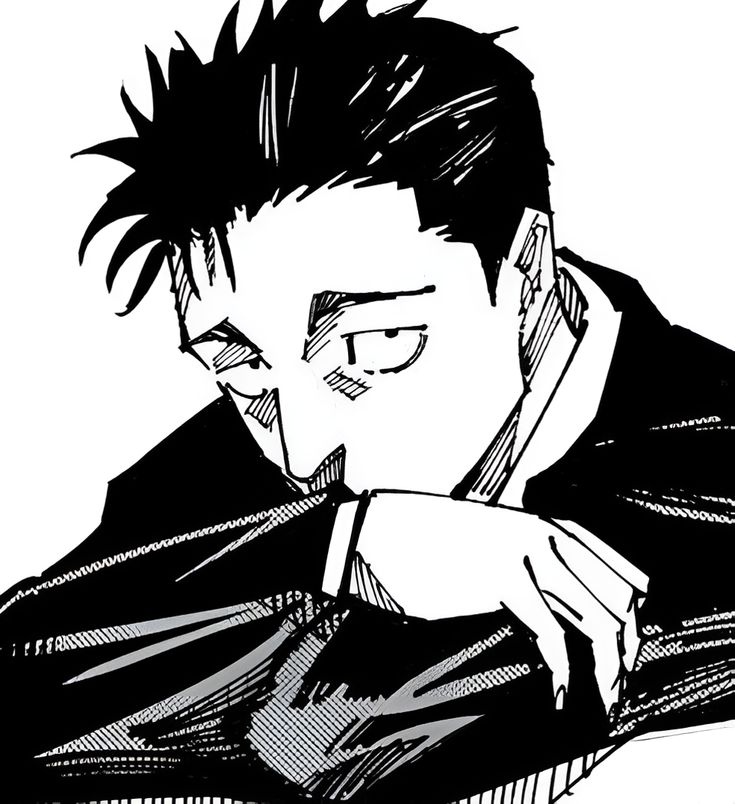
AlliesHiromi Higuruma
- Cursed Technique Deadly Sentencing
A former lawyer whose courtroom-themed domain judges those inside it.
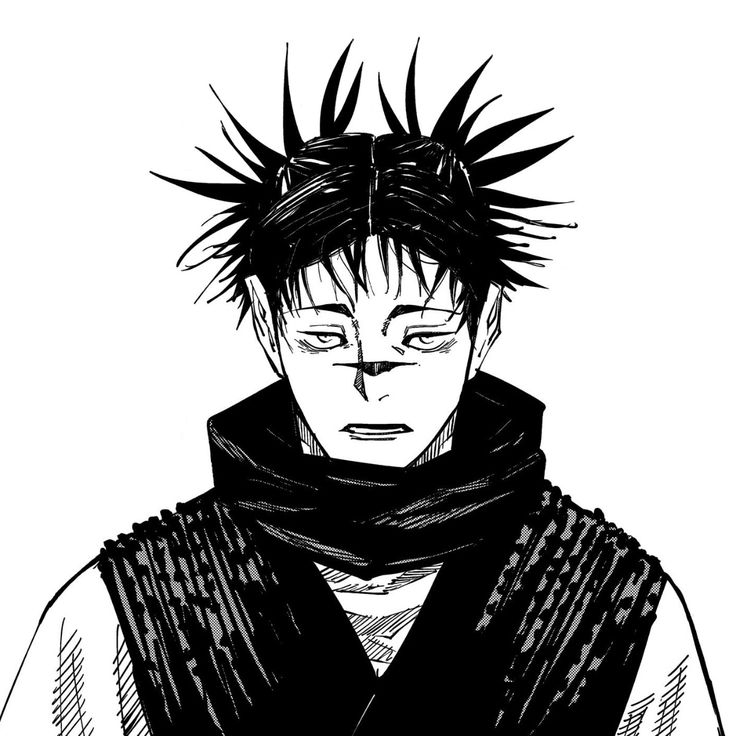
AlliesChoso
- Cursed Technique Blood Manipulation
An elder brother of the Death Painting Wombs who now fights beside Yuji.
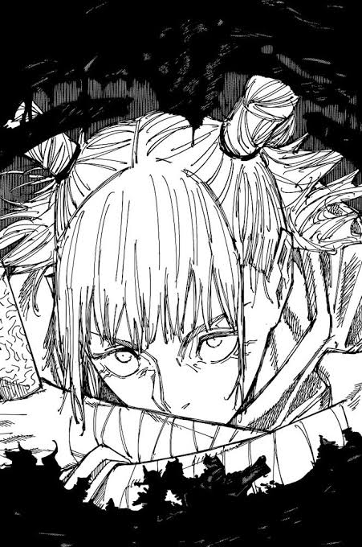
AlliesHajime Kashimo
- Cursed Technique Lightning (Culling Game)
A powerful fighter from the past who joins the Culling Game for a strong opponent.